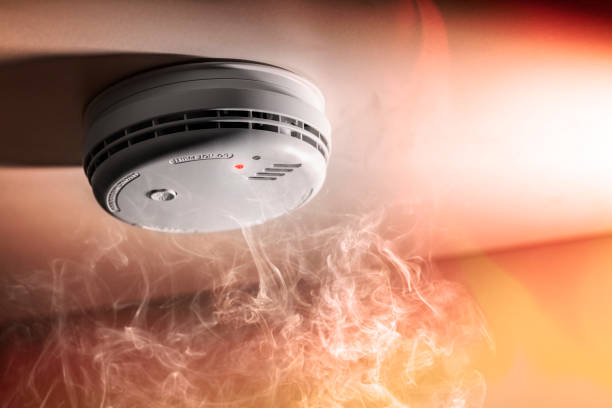
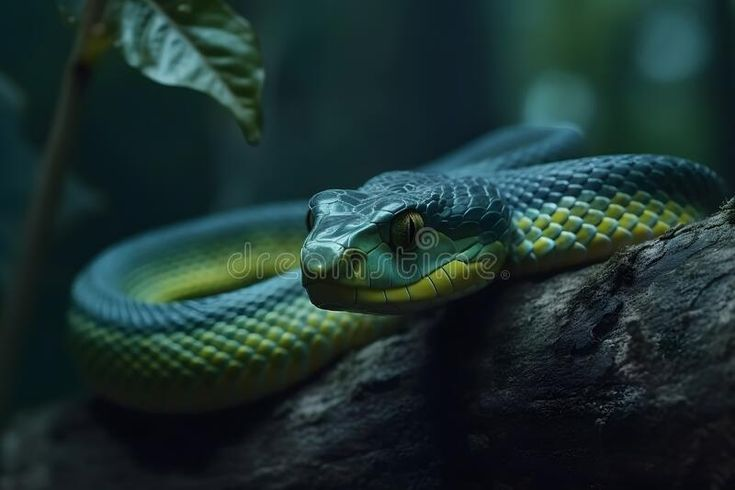
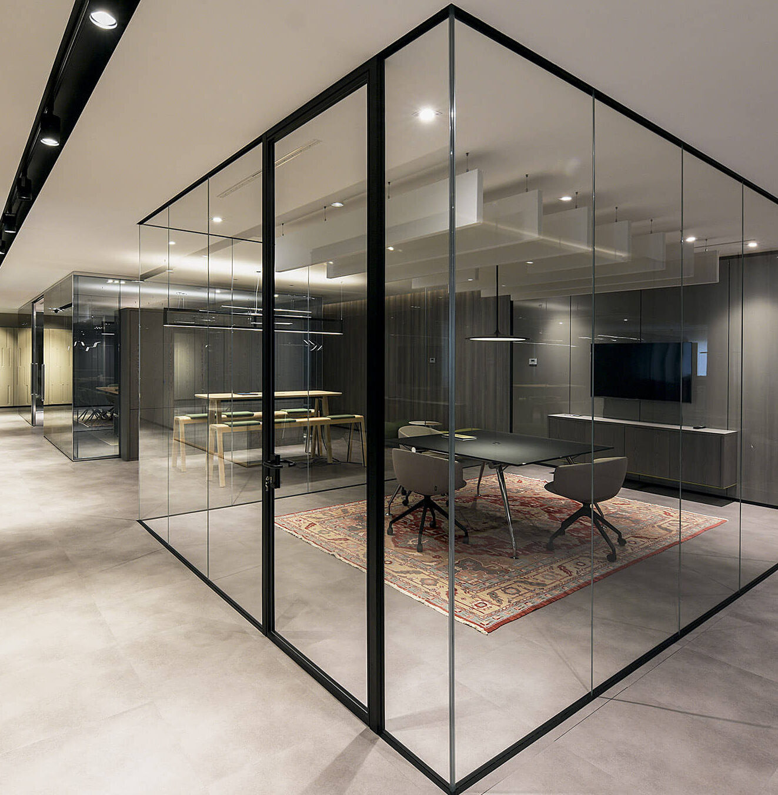

<!DOCTYPE html>
<html lang="en">
    <head>
        <title>Homes Starting a New Beginning</title>
        <link rel="stylesheet" href="styles.css">
    </head>
</html>

    <section class="title">

<H1>Homes Starting a New Beginning</H1> 

</section>


<nav class="navbar">

    <a href="/Figma.home.Html/">Home</a>
        <a href="Interior2.html">Interior</a>
        <a href="Technology features.html">Technology features</a>
      <a href="Cleaning ai.html">Cleaning ai</a>
    
    </nav>
        <section class="row"></section>

<section class="center">

        

</section>

<section class="row"></section>

<h2>Cleaning AI refers to artificial intelligence technologies 
    designed to assist with or automate cleaning tasks. This can 
    include robotic vacuum cleaners, smart home systems that manage 
    cleaning schedules, and software that optimizes cleaning routes and
     processes. These technologies often use sensors, machine learning,
      and data analytics to improve efficiency, reduce labor, and 
      enhance cleaning effectiveness in various environments, from 
      homes to industrial spaces. Overall, cleaning AI aims to simplify
       and enhance cleaning tasks, making them more efficient and less
        time-consuming.</h2>

        <section class="row"></section>

        <section class="room">

        
        
        

        </section>

        <section class="Interior">

    <h2>A fire alarm system is crucial for safety, designed to 
    <br>detect smoke or fire and alert occupants to danger.</h2>

    <h2>Water damage in ceiling walls can be a serious issue, 
    <br>often indicating leaks or structural problems. This 
    <br>home has many features to prevent this from happening.</h2>

    <h2>"Water rats" often refer to creatures like the common 
    <br>water rat, or more broadly, to any rodent that inhabits 
    <br>wet environments. But with technology we can prevent this.</h2>

        </section>

        <section class="row"></section>

        <section class="room">

        
        
        
        
        </section>


        <section class="Interior">
        <h4>The phrase "20 snakes (venom: green froth)" suggests a 
        <br>scenario involving snakes that produce a distinctive 
        <br>venom characterized by a green frothy appearance.</h4>

        <h4>Glass walls in a nursery can create a bright, open, and 
        <br>inviting environment. With this you can always ensure your 
        <br>kids are safe.</h4>

        <h4>It seems like you’re referring to sensory elements related 
        <br>to media, specifically focusing on smell and sound.</h4>

        <h4>Robot helpers are automated devices designed to assist with 
        <br>a variety of tasks, enhancing convenience and efficiency in 
        <br>daily life.</h4>

        </section>